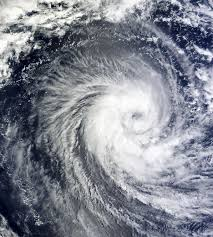

My adventure at Jamboree South-Korea
Jamboree
I come from Norway, and I was in korea for 3 weeks, and the whole reason why I was in korea was becuse I was a participant in The World Scout Jamboree camp 2023. Jamboree is the biggest international scout camp in the world, it only happends every 4 years. This is a camp where we expirience new cultures, and meet scouts from all over the world. I learned so much, and made so many friends that I still have contact with to this day. This was an amazing expirience that I will never forget. However, they were some challenges. We were originaly going so spend about 9 days in Seoul, and about 14 days at the campsite, but due to a typhoon stricking the camp, the campsite time got way shorter.
Typhoon
What you see in the picture abow is a typhoon. the storm becomes stronger and stronger the closer you get to the middle. The middle of the storm was about to hit our camp, so we had to pack our stuff as fast as possible, and we got driven away with busses. We got evacuated. We did not know where we were going, just that it was some place in Seoul. It turned out that our parents had goten an e-mail, wich said we were going to stay at an amarican military camp. We ourself had not heard anything about this, and it turned out we were not going to stay at a military camp. We were staying at an undone hotel in seoul. The hotel had a bathroom, kitchen, washer, and a fridge, but not any furniture. So not any beds, we needed to sleep on the floor. We had goten used to that, becuse we had been sleeping in tents at the camp for 5 days. However, the strangest thing about this hotel was that the bathroom had seethrough windows. We were able to see right through to the shower, and toilet. Our rooms was also mixed genders, so that did not help. So We gafataiped towels to the window, so we wouldnt see anything. The day the typhoon were going to hit, we needed to stay inside our hotel room for 24 houers. We had responsability to get all our food suplies ourself, so we needed to find something to eat the day before. that was a challenge becuse the covinient stores were so different than what they are in Norway. It was so much strange food, but we found something in the end. We weere unsure witch part of the typhoon that was going to hit where we were, and when it was going to hit. We only knew it was some time in this 24 houer time frame. The time we though the typhoon was going to hit got delayed many times before it actually hit. We had been told there could be flything object, and we needed to stay away from the windows. The intensity of the typhoon all depended on what part of it that hit us. It turned out only the very edge hit us, so we did not expirience anything else than what seemed like a strong Norwigian storm. Once the storm was over we were allowed outside again.
The worst heatwave in 100 years
It was extreamly hot while we were in korea. It turned out that this was the worst heatwave asia had had in 100 years. The temprature was way over 40 degrees Celsius. Even the countrys that were used to heat found it soo hot. That was the think we always talked about when we meet new people, becuse that was the thing w almost constantly thought about. Before the camp we were able to go inside too cool off, but once the camp started that was not an option. The water at the camp was also almost always warm, and it tasted like chlorine. If you were lucky you would catch the staff driving around handing out cold, good water. they would do this everyday. At the toilet there were posters how dehydtated you were by the color of your urine, and how much water you needed to drink from that. These were there to make people who needed it drink more, becuse many people were not drinking anoph. Some people expirienced heat related ilneses. some people colapsed from not getting anoph water. These people were sent to the camp hospital. These occurences were pritty comon around the camp. the camp hospitall always had a lot to do, and were compleatly exausted by the end of the Jamboree. Uk were most affected by there heat related illenesses or colapses, they were also the biggest contigent. So they desided to leave the camp. They did this becuse their contigent have way more strickt rules when it comes to safety. Another reason where also since to levave more resorces for the rest of the camp. It was mixed reactions to this, becuse it was a big event they were all a part off, conecting the scouting organisation all over the world. However, most people understood. The US left a day after too, becuse they have a big conection to the UK, and follow whatever they do. I found this a bit disapointing, becuse I got a lot of friends from UK, and they left so suddenly. I was not able to get the contact information for most of them, but I managed to get the snapchat of two of the 5 poeople. I still have contact to theese two people today.
Hygiene
The hygene was also not perfect. The toilets were extreamly discusting. they were anoph toilets, and not much que. But there were stil many people sharing few toilets, and the toilets were only cleaned once a day, resulting in descusting toilets. there would be urine on the seeats, used toilet paper and/or dead bugs on the floor. Luckily some toilets were bether, but it was still descusting. the soup would also be used up pritty qucly, so there was almost never soup. We always carried aniback around as a consequence of this. We had soup at our units camp, so we were able to wash our hands before making food. The toilets got way bether after the staff started to clean them more often due to the complains, but the lacking of soup never ended.
The korean citicens reactions

Although this sounds bad, it was not really there was alot of good moments. If I got the opertunity. The korean news had been writing about all the bad things, and over dramatised it. Many people knew about Jamboree, and it was really easy to spot us, becuse we always had to wear our scarfs. So after we got evacuated, people started coming up to us and asking about the jamboree, and apologising. they felt ashamed over their contry, and felt bad for us that had to expirince this. there was many people giving us gifts. Like there were one person, coming up to us and giving us a bag of korean juice boxes. The weirdest expirince I had with this was what happend in the picture abow. We were just going to eat dinner, and all out of sudden we got a box of cola each, that we had not orders. We were all very comfused. The bisnise poeple behind us said threw google translate that they had bough it for uss. then we saw some poople wispering, and looking at us, and smoke bread side ret showed up on our table. Then when the bisnise poeple were done eating they aked us if we could come outside with them and take a picture. this was really strange, but we argreed. The man beside me grabed my hand and held it up, confused I just made a pease sign. When we were done, before they left they told us that they has paid for the whole entier meal. Then they left. This whole thing was really strange, but fun expirince.
I have now mostly talked about the ad things that happend, but there were so much incredible, unforgetable expiriences. I learned so much on this trip, and got so many friends. I still have contact with all of them, exept the three people from Uk. Even though some bad things happend, it was still fun. I had a really good time, and I would definetly do it again if I could.